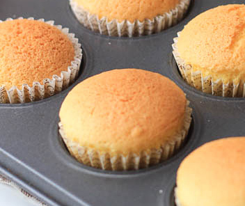

DESCRIPTION
Cheggy loves his eggs. This week, we will be making eggcake, a soft, airy, cake made from eggs, and 4 other common ingredients.

Eggycake in the flesh...er, cake
DIRECTIONS
- Mix em all up in a bowl with a whisk
- Line cupcake pans with cupcake paper
- Pour into each cup until half full
- Bake for 30 min at 350F
- Let cool for 15 min before enjoying!